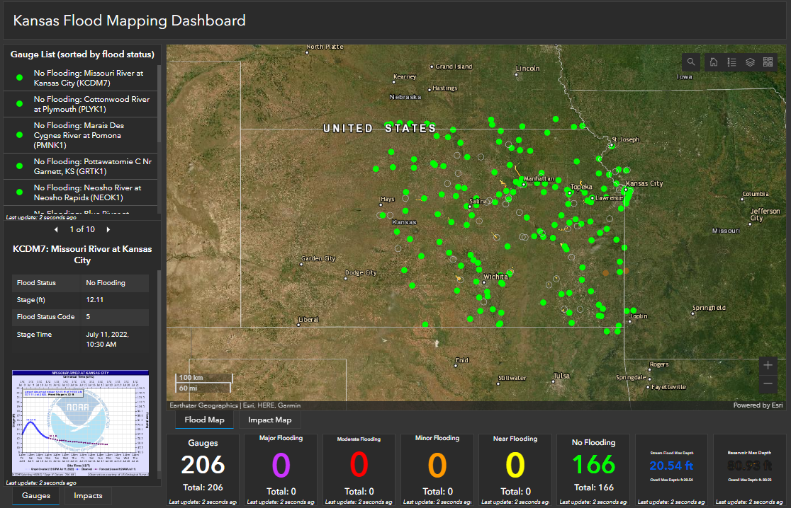

7. Flood Mapping Dashboard#
Providing flood maps as web applications will make the information available with anyone who has internet access. The Kansas Flood Mapping Dashboard (see below) is a web application that provides a simple interface to access the flood maps produced by the project.

There are several options to build a map-oriented (or geospatial) web application for flood maps. One easy approach is to use the ArcGIS Dashboard template to build a web application on the ArcGIS Online platform. Another option is to use the Streamlit template.
7.1. ArcGIS Dashboard Elements and Layout#
The elements used in the flood mapping app include: web maps, lists, details, indictors
Publishing Maps map service on the server has features and rasters/tiff (for example, gauges, streams, and floodplains). When creating an AGO web map with the map service, the map service (i.e., all the layers) as a whole can also be added to the AGO web map as a group layer. Individual layers can be removed from the group layer but cannot be moved out of the group layer. Individual vector layer (by their layer ID number) from the map service can also be added to the AGO web map as layers. However, individual raster layers CANNOT be added (by their layer ID number) to the AGO web map! Not sure why this is the case.
The Kansas Flood Mapping Dashboard has an URL that’s not easy to remember. Can we generate a more meaningful URL for the dashboard?
7.2. ArcGIS Dashboard Issues#
ArcGIS Online (AGO) provides a geospatial dashboard template which uses map(s) as the main focus to indicate situations that change with map extent. The template consists of map(s) and related situation elements (such as indicator, list, details, etc.).
While it is easy to build a dashboard app quickly using the template, there is an important issue encountered in building the flood mapping dashboard that has not been resolved. Below are some examples related with the issue:
Dashboard web map seems caching both pop-ups and maps (at different zoom levels) from the Gauges map service. When the underlying gauge data (for example, gauge status and status code) on the server are changed, it’s not reflected on the dashboard web map at all the scales. The map layer’s Refresh Interval property, which is currently set as 30 minutes (the frequency that the gauges are updated), only controls how often the map layer at current scale is updated. when zooming in/out, cached maps at other scales are still used, which don’t reflect the data change on the server.
Gauge attribute popups seem having the same issue. Those cached popups don’t reflect the data changes on the server
“Indicator” element’s reference value (for example, total number of major flooding and total number of impacted hexagons), which is not updated with changing map extent, also uses cached value which doesn’t reflect the update on the server.
The issue is because there is no way to control dashboard element’s caching.. This is especially a problem for our application as it updates map services very often (for example, the stream flood map is updated every hour). Several approaches have been tried, but none of them seemed working.
On the server in ArcGIS Server Manager, the Gauges service’s Caching property is set to ‘Dynamically from data”. But this doesn’t control whether the client (i.e., dashboard web map) to cache or not the maps.
Publishing the gauges as a Feature layer on the server (which allows user to edit features) seems not helpful though this link mentioned cache control for feature layer.
Note the ArcGIS Pro does have ways of controlling layer refresh rate (Properties\General) and cache (Properties\Cache). Those properties, however, are not related and available to the map(s) on the dashboard.
There are possibly two ways to deal with this issue:
Clear web browser caches and reload the app. Here it how to clear caches in Chrome.
See this link which asked for disable client caching for a map service layer, and how to change some dashboard JavaScript code to handle the problem.
7.3. Streamlit Flood Mapping Dashboard#
Streamlit dashboard for flood mapping
Streamlit geospatial dashboard template for general geospatial mapping applications